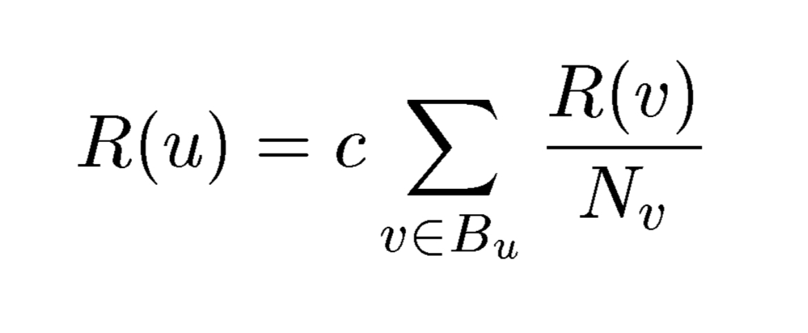
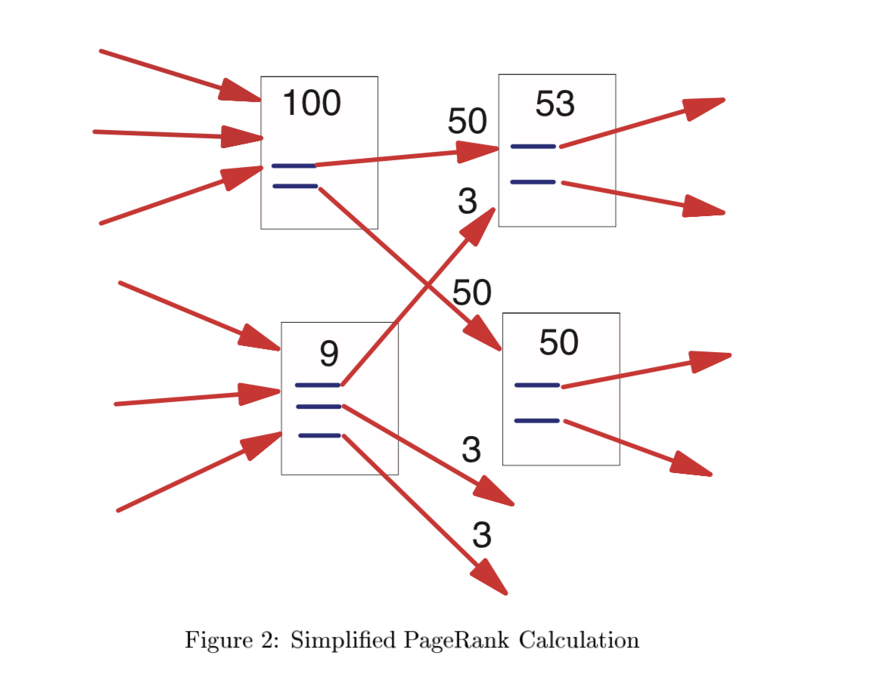

Google PageRank
What is PageRank
Google and other such search engines have to return the most relavant web pages out of the hundreds of millions on the whole network of sites. They achieve this by using a sorting algorithm in order to find the most relavant and trustworthy sites. One of the factors to this algorithm is a page's PAGERANK. The Pagerank of a site can be seen as a measure of how trustworthy that site is. The Pagerank algorithm is used to assign numerical weights, or importance, to each webpage. This algorithm is used on any set of webpages that are linked to one another through hyperlinks (citations).
The Algorithm
First, we will define:
- backlink as a link that is pointing towards any page u.
- fowardlink as a link that is pointing out of u into another page w.
Given The Algorithm:

We can define:
- Bu as the set of all pages that cite our webpage u, that is, a set of all pages with fowardlinks to u
- v as an element of the set Bu
- Nv is the total number of fowardlinks that are in v
The PageRank algorithm is an recursive algorithm that calculates the PageRank of a site 'u' from the set of pages, Bu, that point to 'u'.
These backlinks are weighted based on the PageRank of the site that contains it, R(v), divided by the number of forward links in that page.
If the backlink comes from a particularly important site (with high PageRank), it will be weighted higher.
The PageRank of a page is the sum of the PageRank of the backlinks. It is then mulitplied by c to make sure it adds up to 1.
PageRank can be thought of intuitively with the random surfer model: it models the chances that a surfer would click on a link if they were randomly selecting links to click on.
If a page has a PageRank of .4, then there is a 40% chance a web surfer will click on the page. We need c because we don't want the total PageRank exceeding 100%. To help you visualize the algorithm, we have the diagram below.
 (From here )
After distributing the pageranks of each site like this, the process is repeated until the sites' pageranks converge into a certain value, at which point, any further calculations will result in minimal change
Problems & Solutions
There are some problems with this model. One of them being dangling links. Dangling links are links that lead to a webpage without any forward links.
This creates a problem because with each iteration as you calculate the PageRank score, the score decreases.
This makes pages that might be important less important because it has a lower score.
To fix this, PageRank simply removes all of the websites without any forward links because they don’t affect the PageRank score and puts them back in after all of the other websites are scored.
Another problem with this model is rank sinks. If we have web pages linking to each other, forming a loop, and a web page that links to one of the web pages in the loop, then we will have created a rank sink.
This is problematic because it will inflate the PageRank of the websites. To prevent this from happening, the algorithm will be modified to simulate a 15% chance of going to a random website.
This creates an artificial link to every website and disrupts the loop. This mimics the behavior of a random surfer getting bored then going to a new website. An example of a rank sink can be found below:

Conclusion
The PageRank algorithm, as a recursive weighting algorithm, is useful for determining the relevance of a certain site by looking at the amount of ciations and the quality of the citations pointing to that site. This model is good because it reduces the possiblity of someone manipulating a certain site's pagerank by adding citations pointing to it. The amount of pagerank distributed from a certain link is dependent on the pagerank of the initial site.